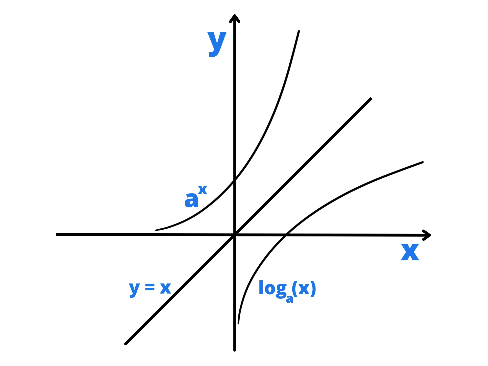

Una funzione logaritmica è una funzione del tipo:
\(y=\log_{a} (x)\)
con \(a>0\) e \(a\neq 1\)
Sappiamo già che la condizione di esistenza di un logaritmo, oltre a quelle scritte sopra, è che il suo argomento sia maggiore di 0. Quindi il dominio sarà formato da tutti i numeri reali positivi, ovvero da \(\mathbb{R} ^+\).
La funzione logaritmica \(y=\log_{a} (x)\) è la funzione inversa della funzione esponenziale \(y=a^x\) , di conseguenza il suo grafico sarà uguale al simmetrico della funzione esponenziale rispetto all'asse \(y=x\):
Per questo otteniamo che la funzione logaritmica deve essere monotona crescente (sempre crescente) per \(a>1\), mentre sarà monotona decrescente (sempre decrescente) per \(0< a < 1 .\)
Siccome per ogni \(a\) (che rispettano le condizioni di esistenza):
\(\log_{a} (1) = 0\)
La funzione deve sempre passare per il punto \((0;1)\).
Siccome, usando la formula del cambiamento di base, abbiamo:
\(\log_{1\over a} (x) =\) \(\frac{\log_{a}(x)}{\log_{a} ({1\over a})}=\)\({\log_{a} (x) \over -1 }=-\log_{a} (x)\)
\(y=\log_{1\over a} (x)\)
è il simmetrico rispetto all'asse \(x\) della funzione:
\(y=\log_{a} (x)\)
Ricordiamo innanzitutto che \(\ln(x)\) è il logaritmo base e di x, dove e è il numero di Nepero. Normalmente si studia solo il caso di \(\ln(x)\) perché non ci si vuole soffermare troppo su questo e si studia solo questo essendo il più comune.
Per le condizioni di esistenza (C.E.) del logaritmo, dobbiamo avere \(f(x)>0\), altrimenti in quel punto \(\ln(f(x)\) non esiste nei numeri reali.
Per tracciare un grafico con buona approssimazione vi basta poi ricordare che:
\(\ln(1) = 0\)
che quando \(f(x)\) si avvicina a 0, \(\ln(x)\) diminuisce e quando \(f(x)\) aumenta, \(\ln(f(x)\) aumenta.